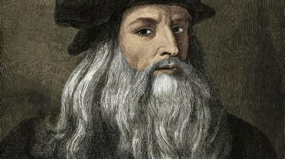
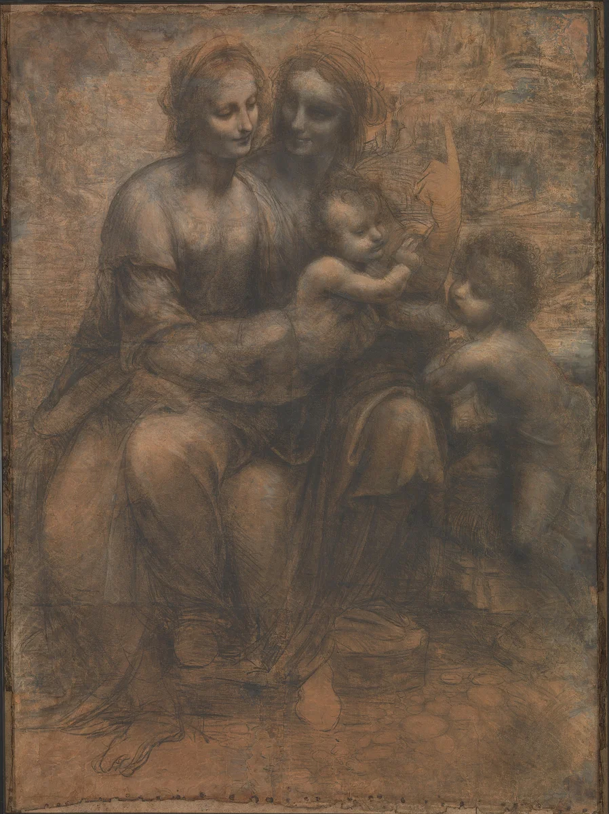
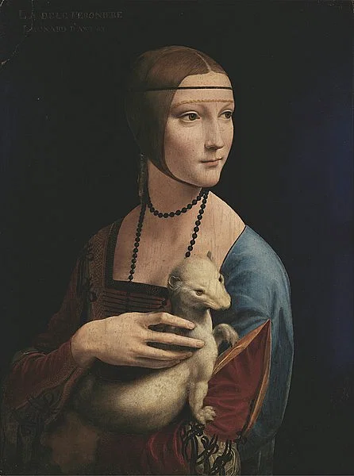

This is a short history of one of the greatest renaissance artist, engineer and scientist to ever walk this earth.

A photo of leonardo da vinci
Brief Introduction
Leonardo da Vinci (1452-1519) was an Italian Renaissance artist, architect, engineer, and scientist. He is renowned for his ability to observe and capture nature, scientific phenomena, and human emotions in all media. Leonardo’s innovative masterpieces demonstrate a mastery of light, perspective, and overall effect. His most-loved works include the Mona Lisa portrait and The Last Supper mural.
Considered one of the greatest minds in history, Leonardo's approach to acquiring knowledge on everything from anatomy to mechanics involved understanding both the theory and practice of any given subject. In short, by combining the skills of the artisan with those of the scholar, Leonardo's vision demonstrated the benefits of a completely new approach to understanding the present world and just how to best create new and marvellous things for a future one.
Early Life
Leonardo was born on 15 April 1452 CE, the illegitimate son of a lawyer from the town of Vinci near Florence. A gifted child, especially in music and drawing, c. 1464 CE the young Leonardo was sent off to pursue a career as an artist and study as an apprentice in the workshop of Andrea del Verrocchio (c. 1435-1488 CE). Other notable future artists then at the workshop included Sandro Botticelli (1445-1510 CE) and Pietro Perugino (c. 1450-1523 CE). Here Leonardo would have learnt to master sketching and painting techniques, as well as the latest trends like the use of classicising ornamental detail in paintings. One of the young Leonardo's first contributions to Renaissance art may have been the kneeling angel in Verrocchio's Baptism of Christ painting (c. 1470 CE, Uffizi, Florence). Completing his apprenticeship in 1472 CE, Leonardo became a paid assistant to Verrocchio and was registered as a master in the painter's guild of Florence.
Other skills Leonardo perfected early on in his career included chiaroscuro (the contrasting use of light and shade) and sfumato (the transition of lighter into darker colours). The former technique is especially evident in his c. 1503 CE coloured charcoal illustration Virgin and Child with St. Anne (National Gallery, London) and its c. 1505 painted version (Louvre, Paris). The technique of sfumato is well-illustrated in Leonardo's c. 1483 CE oil on panel painting Virgin of the Rocks (Louvre). Leonardo was also an innovator, though. His c. 1472 CE The Annunciation (Uffizi) illustrates the artist followed some Renaissance trends, for example, the classical details of Mary's book rest, but also ignored others such as his obvious rejection of symmetry in the background trees.

Virgin and Child St.Anne by Leonardo da Vinci
Paolo Giovio, Bishop of Nocera, art historian and contemporary of Leonardo's, gives in his mini-biography the following summary of the artist's personality:
He had a character which was very amiable, impressive and generous, and he had the most beautiful appearance. He was a splendid critic and inventor of all things elegant and delightful, especially in theatrical displays. He sang to his own accompaniment on the lyre, and he was on excellent footing with all the princes of his time.
Notes and Sketches
Leonardo was far from being restricted to art and his interests were wide indeed, encompassing just about all the physical world. He studied architecture, engineering, geometry, perspective, mechanics, and hydraulics to satisfy himself just how things worked and why they appeared as they do to the human eye. The natural world was not neglected with studies in anatomy, botany, zoology, and geology. Leonardo kept notebooks throughout his life in which he recorded the results of his investigations and his ideas for new inventions. Machines the artist conjured up include cranes, paddlewheel boats, tanks, cannons, apparatus to breathe underwater, and even flying contraptions. The only element many of these designs lacked was an internal combustion engine, not to be invented, of course, until centuries later. The notes in these books are often interspersed with sketches, many being miniature masterpieces in themselves. Perhaps the most famous of all these sketches is the Vitruvian Man drawing (see below).
In addition, Leonardo wrote down his thoughts on painting and his observation of effects seen in nature he considered useful to the artist. As the man himself said, "a painter is not admirable unless he is universal", although he was appreciative that mastery of any subject takes time and noted that impatience was the mother of stupidity (Hale, 183). These notes and treatises were no doubt useful in Leonardo's role as a tutor to young artists in his own workshop. A curiosity of them is that many are written as mirror script, that is in the reverse direction of normal handwriting.

Lady with an Ermine by Leonardo da Vinci
Besides stacks of notebooks, Leonardo built up an impressive personal library which, by 1503 CE, contained 116 books covering such subjects as medieval and Renaissance medicine, religion, and mathematics. The collection included such seminal works as Natural History by Pliny, Geography by Ptolemy I and On Warfare by Roberto Valturio. Leonardo was interested in languages, too, particularly Latin, which he attempted to teach himself in order to read medieval manuscripts in their original form; long lists of Latin words can be found in his notebooks.
Masterpieces
Mona Lisa
The Mona Lisa (La Gioconda in Italian) is an oil on wood panel portrait of an unidentified woman made by Leonardo between c. 1503 and 1506 CE. It measures 98 x 53 centimetres (38 x 21 inches), a relatively small size that often surprises modern viewers used to seeing this iconic image in larger reprints. The painting, rather than merely capturing the physical features of the sitter, attempts to capture the very mood and thoughts of the subject at a specific moment in time, what Leonardo called "the motions of the mind" (Campbell, 257). Other effects include the use of aerial perspective such as the recession of colour into the furthest background of a watery-looking landscape and the difference in gradation of colour from the top to the bottom of the painting.
The Mona Lisa, One of Leonardo’s greatest masterpieces
The casual posture of the lady and the position of her hands forms, with the head as the top point, the classic triangle shape that many Renaissance artists were experimenting with in their paintings. Light and dark colours are used expertly to emphasise the oval face and soft hands of the lady while the contours of these combine convex and concave lines which create an illusion of supple movement. Finally, the three-quarter view of the lady creates another suggestion of movement as she seems to have just that moment turned to regard the viewer. That Leonardo is exclusively interested in presenting a view of a living-breathing individual in intimate contact with the viewer is further evidenced by the lack of any identifying title and the total lack of jewellery or other symbols of wealth which were typical of portraits up to that point. The work was immediately influential, inspiring artists like the young Raphael in his own portrait painting such as Maddalena Strozzi and Baldassare Castiglione. Leonardo must have been pleased with the Mona Lisa as he never parted with it during his lifetime and the picture is today one of the star attractions in the Louvre museum in Paris.
The Last Supper
The Last Supper (Il Cenacolo in Italian) is a depiction of the final meal of Jesus Christ and his apostles which Leonardo painted on the wall of the refectory of Santa Maria delle Grazie, a residence of the Dominican order in Milan. This was a traditional subject to decorate monastic refectories, and the work was very likely commissioned by Ludovico Sforza, whose arms appear at the top of the mural. The work was completed c. 1498 CE. The triumph of the mural is the variation in emotional reactions displayed by each of the apostles as they hear that one of them will soon betray Jesus.
The last supper by Leonardo da Vinci
Like any great work of art, The Last Supper has been subjected to all manner of interpretations. Some, for example, have seen Mary Magdalene in the figure who is intended to be the youthful St. John the Evangelist, sitting to the left of Jesus. Despite the intense interest in the peripheral figures and their meaning, the star of the scene is, of course, Jesus, who, presented as a central triangular form, is further brought to the viewer's attention by the precise perspective of the background which leads the eye irresistibly to the picture's very centre. The triangular motif is further repeated by the marked division in colour of Jesus's clothing and Leonardo organising the apostles into four distinct groups, each forming an approximate triangle with their collective bodies. Finally, amongst all the action and bustle of the gesticulating apostles, Jesus, with both hands on the table, is a vision of immobility, a calm and knowing centre in a storm of outrage and incomprehension.
The Vitruvian Man
Although not a finished work of art (or ever intended to be), Leonardo's pen and ink on paper sketch known as the Vitruvian Man has become so famous that it is one of the images most associated with his name. Measuring 34 x 25 centimetres (13.5 x 10 inches), it was drawn c. 1492 CE and is now in the Academia Gallery in Venice. The name of the work derives from Vitruvius (c. 90 - c. 20 BCE), the Roman architect who famously wrote De Architectura (On Architecture), an influential treatise which combines the history of ancient architecture and engineering with the author's personal experience and advice on the subject.
The Vitruvian Man by Leonardo da Vinci
Vitruvius' work was popular during the Renaissance when artists were re-examining the classical world for ideas and inspiration. In one particular passage, Vitruvius recommends that correct architectural proportions should be derived from a study of the proportions of the human body. The passage describes a human body within a circle and a square. Several Renaissance artists and architects, attracted by the idea that there was some mysterious and perhaps even divine relationship between mathematics, the human body, and beauty, attempted to draw what Vitruvius had only described in words. Leonardo's Vitruvian Man is one such attempt. The man's naval is the centre of the circle and his fingertips and feet touch its circumference. A second male figure, superimposed on the other, is set within a square. The sketch is perhaps a metaphor for humanity's position at the centre of an ordered universe, and as such it has become a defining symbol of the Renaissance and the ongoing enquiry into the exact relation between religion, science, and art.